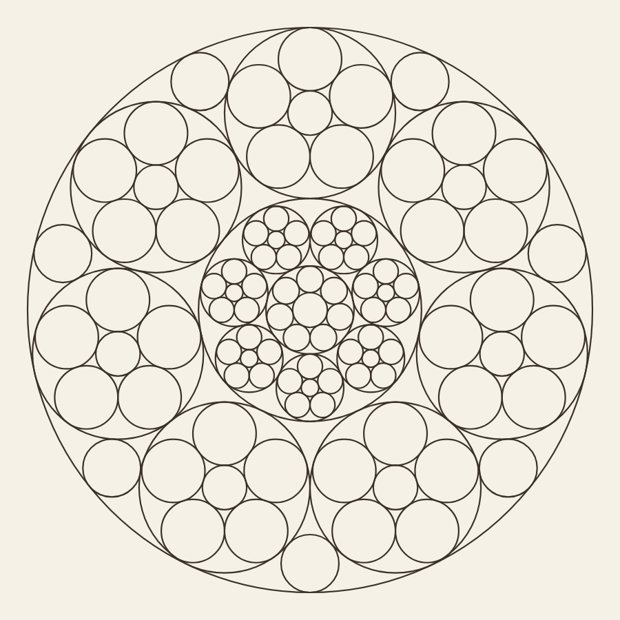
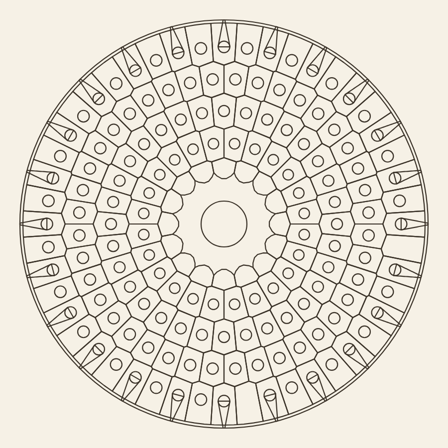
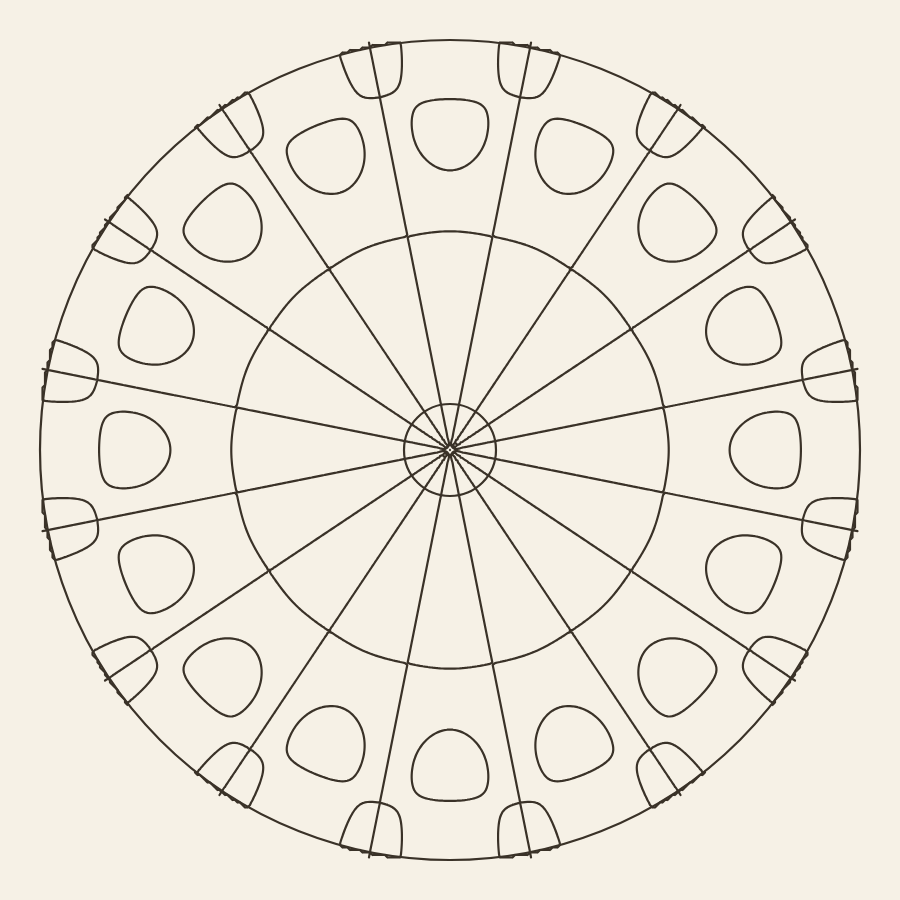
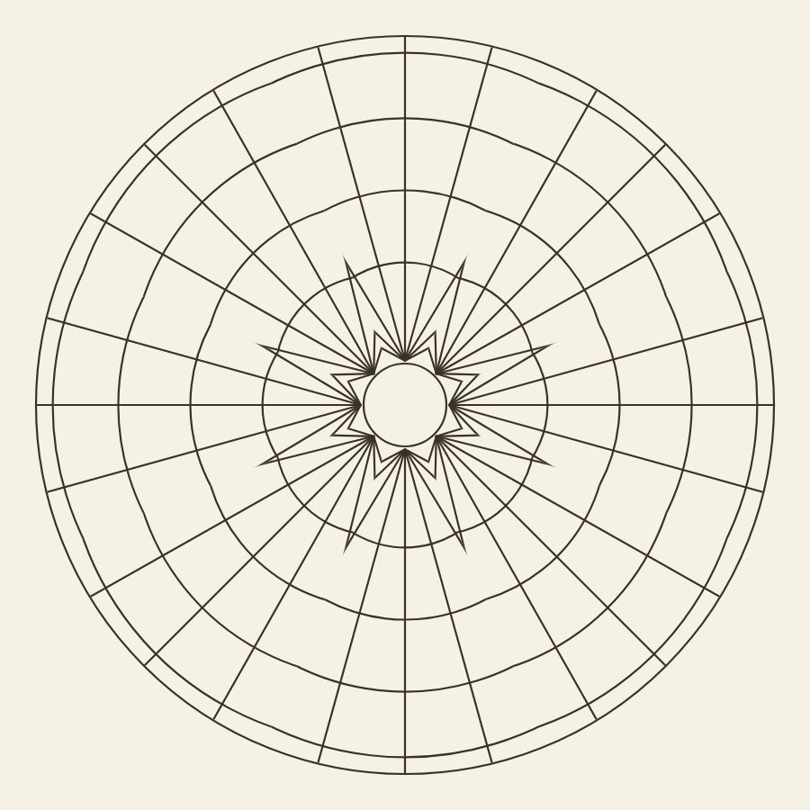
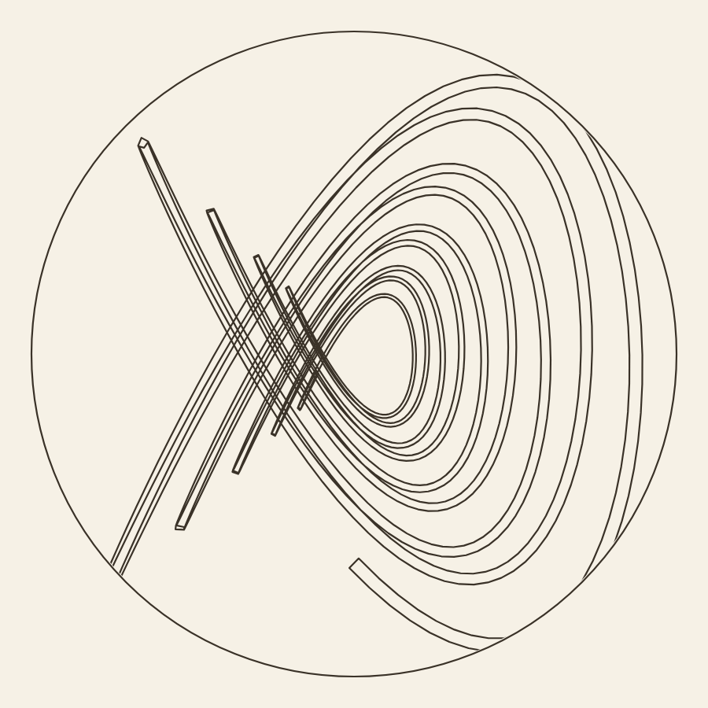

Fünf Entwürfe
Aus Mathematik, Natur und Musik. Außerhalb der App gebaut und daraufhin gemessen, worauf es beim Ausmalen ankommt: Hat jede Form einen Rand? Nichts davon steht in der App.
Wie gemessen wird
Die App prüft in npm test schon das größte Feld je
Motiv. Hier läuft die Gegenprobe: alle zusammenhängenden Gebiete
werden gezählt, mit derselben Wandschwelle wie im Füllwerkzeug
(alpha > 60). Drei Klassen statt zwei:
- Feld — ab 80 Bildpunkten. Das lässt sich mit dem Finger treffen.
- Splitter — 10 bis 80 Bildpunkte. Sichtbar, aber nicht zu treffen. Das ist ein Befund.
- winzig — unter 10 Bildpunkten. Rundungsreste an Berührstellen, auf Papier unsichtbar; die Kantenglättung des Füllwerkzeugs deckt sie zu.
Die Grenzen der App: kein Feld über 4 % der Scheibe, keines breiter als das 1,6-fache seines Segments.
| Entwurf | für | Felder | Splitter | winzig | größtes | Median px² |
|---|---|---|---|---|---|---|
| Kreisbrut | Mandala | 253 | 9 | 176 | 1,2 % | 887 |
| Kieselschale | Mandala | 376 | 0 | 32 | 3,9 % | 347 |
| Klangfeld | beide | 96 | 1 | 9 | 2,9 % | 1106 |
| Fächergewölbe | beide | 149 | 0 | 54 | 1,5 % | 2292 |
| Pendelriss | Blatt | 48 | 72 | 439 | 27,9 % | 767 |
Die Entwürfe

Kreisbrut
Sieben Achsen · 253 Felder · 9 Splitter · größtes 1,2 % · Median 887 px²
Die Ordnung. Apollonische Kreispackung. Drei sich berührende Kreise legen den vierten fest — das ist Descartes’ Kreissatz, und er ist hier wirklich gerechnet, nicht nachempfunden: Von den beiden Wurzelzweigen wird der genommen, der alle drei Kreise nachweislich berührt. In jede Lücke der größtmögliche nächste, drei Schichten tief, und in jeden Ringkreis noch eine kleine Packung.
Was er bringt. Die Feldgrößen stufen sich von selbst — große Kreise zum Ausmalen, kleine als Kies. Genau das fehlt dem Katalog: dort ist jedes Feld ungefähr so groß wie sein Nachbar.
Quelle. Descartes an Elisabeth von der Pfalz (1643); Frederick Soddy, „The Kiss Precise“, Nature 137 (1936).
Urteil. Der beste der fünf. Ruhig, gestuft, eindeutig füllbar. Den würde ich bauen.

Kieselschale
Acht Achsen · 376 Felder · 0 Splitter · größtes 3,9 % · Median 347 px²
Die Ordnung. Ein Gitter aus Poren, wie die Kieselschale eines Radiolars. Die Zellwände sind ein echtes Voronoi-Gitter, über Halbebenen-Schnitt gerechnet und nicht geschätzt; in jeder Zelle eine Pore, deren Ring daneben groß genug bleibt, dass ein Finger ihn trifft.
Was er bringt. Zwei Feldgrößen je Zelle, und die Stacheln laufen über die Ringgrenzen hinweg — auch das gibt es im Katalog kein einziges Mal.
Quelle. Ernst Haeckel, Report on the Radiolaria (1887) und Kunstformen der Natur (1899–1904); D’Arcy Thompson, On Growth and Form (1917).
Urteil. Das Gitter trägt. Die Stacheln nicht — sie lesen sich wie Streichhölzer und müssten anders gezeichnet werden oder ganz weg.

Klangfeld
Acht Achsen · 96 Felder · 1 Splitter · größtes 2,9 % · Median 1106 px²
Die Ordnung. Die Knotenlinien einer schwingenden Membran — die
Linien, auf denen sich das Fell nicht bewegt und der Sand liegen bleibt.
Zwei Moden übereinandergelegt, wie auf einer angeregten Trommel:
J₈ mit vier Knotenkreisen und J₂₄ mit zweien.
Was er bringt. Gekrümmte Wände mit wechselnder Krümmung, und Zellen, die nach außen von selbst kleiner werden.
Quelle. Lord Rayleigh, The Theory of Sound (1877), §200 ff.; die Idee der Knotenfigur von Ernst Chladni, Die Akustik (1802), geordnet von Mary Waller, Chladni Figures: A Study in Symmetry (1961).
Urteil. Die Zahlen bestehen, das Bild nicht. Die Innenhälfte bleibt leer, und die Zellen schwimmen als einzelne Kleckse in einem großen Feld. Physikalisch wahr, als Zeichnung dünn.

Fächergewölbe
Acht Achsen · 149 Felder · 0 Splitter · größtes 1,5 % · Median 2292 px²
Die Ordnung. Ein Fächergewölbe ist kein Polargitter: Jeder Fächer sitzt auf einem Kämpfer, und alles darüber ist ein Kegel um diesen Punkt — die Rippen strahlen vom Kämpfer aus, die Ringe sind Bögen um den Kämpfer, nicht um die Mitte des Blattes.
Was schiefging. Der erste Anlauf legte die Ringe um die Mitte: eine Dartscheibe mit tadellosen Messwerten. Der zweite setzte die Kämpfer richtig, aber an die Nabe — bei acht Segmenten ist die Lücke dort vierzig Bildpunkte breit, der Fächer zerfiel in Stummel. Der dritte schob die Kämpfer nach außen und sprang auf 31,8 % größtes Feld. Gezeigt wird der zweite.
Quelle. Robert Hooke (1675, als Anagramm); Gaudís hängende Schnüre; Block/Ochsendorf zur Gewölbestatik.
Urteil. Fehlgeschlagen. Drei Anläufe, und es bleibt eine Dartscheibe mit einem Stachelstern in der Mitte. Die Messung besteht — das ist gerade die Warnung: gute Zahlen sind kein Bild.

Pendelriss
Eine Kurve · 48 Felder · 72 Splitter · größtes 27,9 % — nach der Mandala-Regel durchgefallen
Die Ordnung. Ein Harmonograph: zwei abklingende Pendel. Die Kurve wird von selbst dünner und wandert nach innen — genau die zwei Hebel, die dem Katalog fehlen, und sie kommen aus der Physik statt aus einem Einfall. Gezeichnet als Band mit zwei Rändern, nicht als Tinte: nur so ist das Band selbst ein Feld und die Lücke daneben auch.
Was schiefging. Sechsfach wiederholt wurde aus einer eleganten Kurve ein Knäuel mit 880 Splittern. Als einzelne Kurve ist es ruhiger, aber viel zu leer.
Quelle. Charles Benham, Harmonic Vibrations (1909); Anthony Ashton, Harmonograph.
Urteil. Fürs Mandala unbrauchbar, und für Blatt zu unruhig beziehungsweise zu leer. Der schwellende Strich als Randpaar bleibt trotzdem richtig — nur nicht an diesem Motiv.
Zwei Fehler, die unterwegs auffielen
Die Nullstellensuche log. Für n ≥ 1 ist
Jn(0) = 0, und dicht bei Null liefert die
Integration nur Rauschen um 1e-17. Ein Vorzeichenzähler findet dort
dutzende „Nullstellen“ und gab j₈,₃ = 0,0598 zurück
statt 19,55. Der zweite Term jeder Überlagerung war damit Rauschen:
dreißig gemessene Zeilen zeigten in Wahrheit eine einzelne Mode —
genau das Polargitter, von dem ich gesagt hatte, es sei nichts Neues.
Aufgefallen ist es nur, weil ein Parameter, der etwas ändern musste,
nichts änderte.
Und meine Literaturspalte war erfunden. Beim Nachprüfen habe ich
Vergleichswerte aus dem Gedächtnis hingeschrieben; sie waren falsch, und
eine Weile sah es so aus, als sei der Code kaputt.
J₈(19,5545) = 6·10⁻⁶ — die gerechnete Stelle
stimmt, die erinnerte nicht. Gegen echte Tafelwerte geprüft trifft die
Bessel-Funktion auf 1e-8.
Was daraus folgt
Zwei von fünf tragen. Drei nicht — und bei zweien davon bestand die Messung. Das ist die eigentliche Lehre dieses Durchgangs: Die Zahlen sagen, ob sich ein Blatt ausmalen lässt. Ob es schön ist, sagen sie nicht.